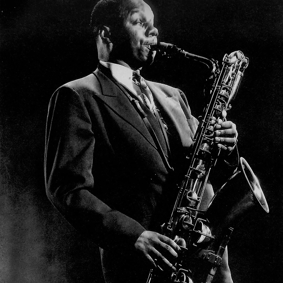

A família
do Saxofone
A família do saxofone é extensa. Todos os membros compartilham a mesma digitação e a escrita é sempre em clave de sol, variando a transposição de acordo com o registo do instrumento. Dentre os sete instrumentos originalmente produzidos, há:
Saxofone Sopranino
É o segundo membro mais agudo da família dos saxofones (atrás somente do recém criado saxofone sopraníssimo, também conhecido como Saxofone soprillo). É afinado em E♭ ou, raramente, em F. O corpo é reto.
Saxofone Soprano

É o integrante mais agudo do quarteto de saxofones clássico. Afinado em B♭. Há também sopranos afinados em C, mas são muito raros. O tradicional é o de corpo reto, mas há também sopranos curvos. Alguns possuem uma chave a mais para o alcance do A mais agudo.
Saxofone Alto
Um dos tipos mais comuns de saxofone. De registro médio-agudo, tem a tessitura próxima à da viola. É afinado em E♭.
Saxofone Tenor
Também é um instrumento muito comum. Tem registro médio-grave. Afinado em B♭. Há também os afinados em C.
Saxofone Barítono

É o integrante mais grave do quarteto de saxofones clássico. Afinado em E♭. É comum encontrar barítonos com uma nota a mais para o grave (A grave, que soa C), recurso raramente encontrado em saxofones mais agudos. Alguns modelos específicos podem contar com o recurso para G grave (que soa B♭).
Saxofone Baixo
Muito utilizado em bandas
sinfônicas e em grandes conjuntos de saxofones. É afinado em B♭. Também pode contar com recurso do A grave (que soa G). Alguns modelos específicos podem contar com o recurso para G grave (que soa A grave), sendo chamado popularmente de Super Baixo. Existem ainda modelos supercompactos chamados de Barítono em B♭.
Saxofone Contrabaixo

É o segundo membro mais grave da família original do saxofone. Normalmente, também conta com recurso para o A grave (que soa C). Seu som é uma oitava abaixo do Saxofone Barítono. É afinado em E♭.